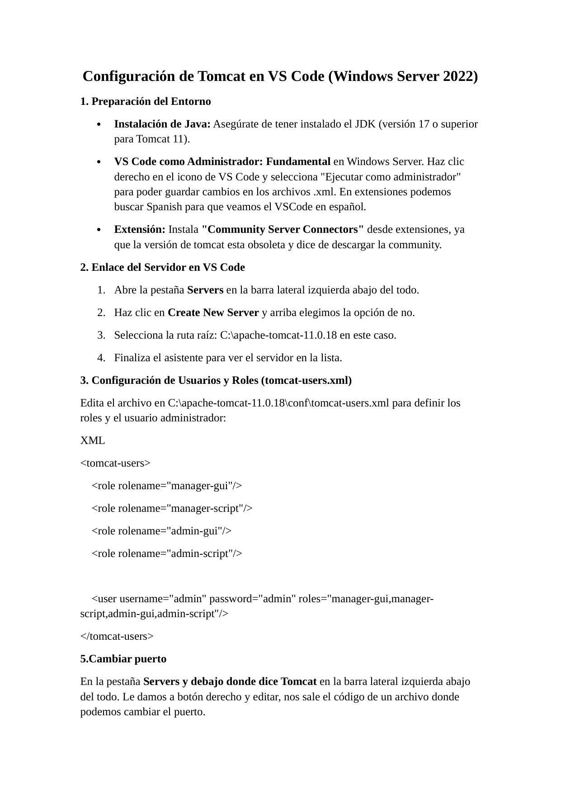
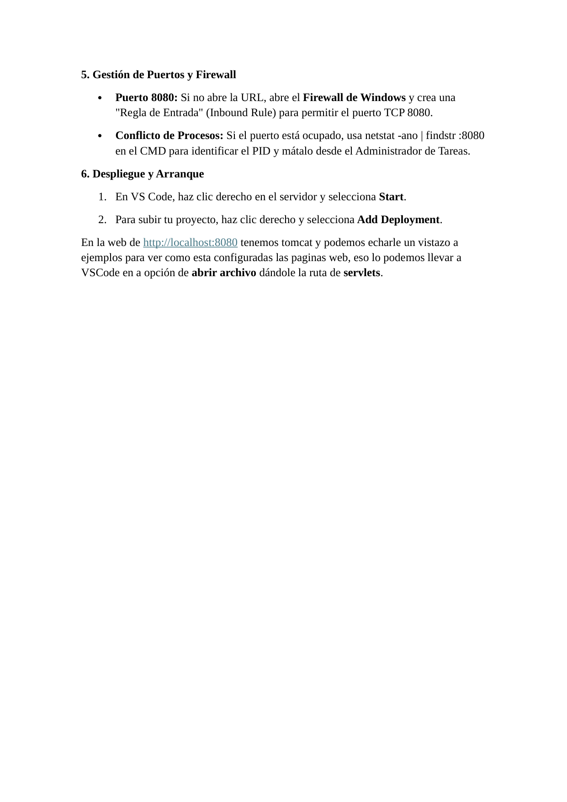

Entorno
| Sistema | Windows Server 2022 |
|---|---|
| Servidor | Apache Tomcat 11 |
| IDE | Visual Studio Code |
| Java | JDK 17 o superior |
| Puerto | 8080 |
Objetivos
- Preparar Java para Tomcat 11.
- Ejecutar VS Code como administrador para editar XML de configuración.
- Añadir Tomcat desde Community Server Connectors.
- Configurar roles y usuario administrador de Tomcat.
- Gestionar puertos, firewall y despliegues desde VS Code.
Procedimiento resumido
Entorno
Se instala Java 17 o superior y se abre VS Code como administrador.
Extensión
Se instala Community Server Connectors para gestionar Tomcat.
Servidor
Se añade el servidor apuntando a C:\apache-tomcat-11.0.18.
Usuarios
Se editan roles en tomcat-users.xml usando credenciales de laboratorio redactadas en el write-up.
Puertos y firewall
Se valida el puerto 8080, se revisan conflictos con netstat y se permite el tráfico en firewall si es necesario.
Despliegue
Se arranca Tomcat desde VS Code y se añade el despliegue de la aplicación.
Comandos relevantes
netstat -ano | findstr :8080
Verificacion
- Tomcat responde en http://localhost:8080.
- El servidor aparece en la pestaña Servers de VS Code.
- El despliegue se puede añadir desde Add Deployment.
Buenas practicas
- No usar <TOMCAT_ADMIN_USER>/<TOMCAT_ADMIN_PASSWORD> fuera de laboratorio.
- Limitar roles de administración a los mínimos necesarios.
- No exponer el Manager públicamente.
- Controlar el puerto 8080 en firewall.
Evidencias visuales
Capturas del laboratorio renderizadas y preparadas para documentacion tecnica.
01 captura pagina 01

02 captura pagina 02

Conclusiones
El laboratorio queda documentado como evidencia de configuracion, administracion y validacion de servicios web en entorno controlado.